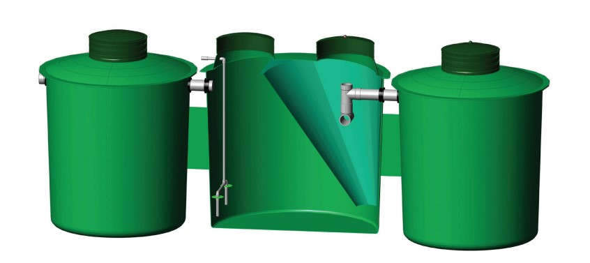
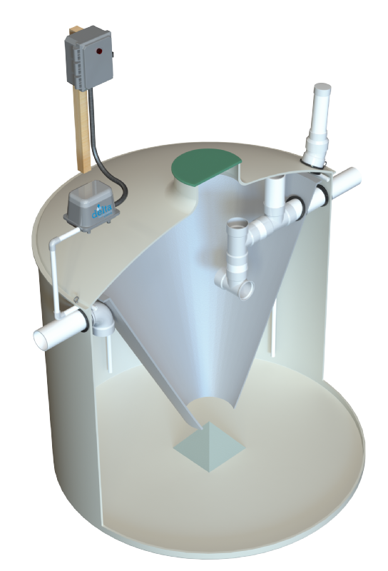

-
Call Us
330-722-4262
-
Email Us
SuburbanSeptic@gmail.com
-
Hours of operation
Monday-Friday 8AM-5PM
- Get A Quote
Services Offered
Residential & Commercial Septic System Cleanings
We provide thorough septic system cleanings for both residential and commercial properties. Our experienced team ensures the proper maintenance and functionality of your septic system.
Sewer Line Snaking
Our sewer line snaking service helps clear clogs and blockages in your sewer lines, restoring proper flow and preventing potential plumbing issues.
Replacement of Aerators/Air Compressors/Sump Pumps
We offer reliable replacement services for aerators, air compressors, and sump pumps in your septic system, ensuring efficient operation and preventing malfunctions.
New Construction Septic Installation
Our expert team specializes in new construction septic installations. We handle the entire process, from design and permitting to installation and final inspection, ensuring a reliable and compliant septic system.
Real Estate/Residential Septic Inspection
We offer comprehensive septic inspections for real estate transactions and residential properties. Our inspections provide valuable insights into the condition and functionality of the septic system.
Annual Maintenance Service Contracts
Ensure the longevity and proper functioning of your septic system with our annual maintenance service contracts. Our team performs regular inspections and maintenance tasks to keep your system in optimal condition.
Systems and tanks
Jet Aeration tanks
A pre-treatment compartment receives influent where heavy solids settle and form sludge at the bottom of the tank. The treatment compartment in which wastewater or greywater is thoroughly mixed with oxygen via our 700++ aerator and passed over the living microorganisms located on Jet’s BAT (Biologically Accelerated Treatment) media. The settling compartment in which treated wastewater or greywater then flows. A clear liquid, devoid of color and odor, known as effluent, is then discharged through the baffled outlet.

Aqua Safe Aeration tanks
The Aqua Safe® are round tank configurations comprised of an aeration mixing compartment and a center clarifier compartment. Wastewater first enters the aeration mixing zone. The mixed liquid next enters the clarifier compartment and continues to flow upwards to the discharge pipe. The treated effluent then flows through an optional disinfection device. The effluent is then safely discharged by gravity flow or via an application pump, to a surface spray, subsurface drip, low pressure dose, absorptive mound or subsurface drain field. The result of the Aqua Safe® process is a clear, odorless effluent discharge, which meets and exceeds state and national water quality standards.
Whitewater Aeration
Oxygen is pumped into the system allowing the bacteria thrive and grow in much greater numbers than would occur naturally. This “overpopulation” of bacteria speeds the process of breaking down the sewage, making it safe for release into the environment, and is defined as the aerobic treatment process. This process occurs entirely within the self-contained Whitewater Aerobic Treatment Unit which is comprised of an outer mixing tank and a cone-shaped settling chamber. Raw unsettled wastewater enters directly into the mixing tank where mixing occurs through an open air distribution system. The mixed liquid then enters the settling chamber from the bottom. The settling chamber maintains a quiet condition which allows solids to settle down and re-enter the mixing chamber for more processing. The liquid is hydraulically displaced upward and is discharged as clear, odorless treated effluent which meets or exceeds permit requirement.
Drip Dispersal System
We take pride in being the first company in Ohio to have installed and distribute these unique systems. We remain one of the only companies in NorthEast ohio to service these complex systems. The system incorporates filtration, time and level controlled application, and ultra low rate drip distribution into the soil.. The drip dispersal system will first be treated in an aeration tank by either air compressor or Jet Aerator to break down the sludge build up. Next it will be pumped through a drip filter and distributed to the drip lines.
Since the installation of the field distribution lines results in little soil disturbance, and effluent discharge volume from each emitter hole is insignificant, installation of the system has minimal site impact even in established lawns or park areas. There are no visible indications that the installation site is being used for disposal purposes. This system is especially suited for landscaped or wooded areas near buildings, trailer parks, apartment complexes or residential subdivisions.